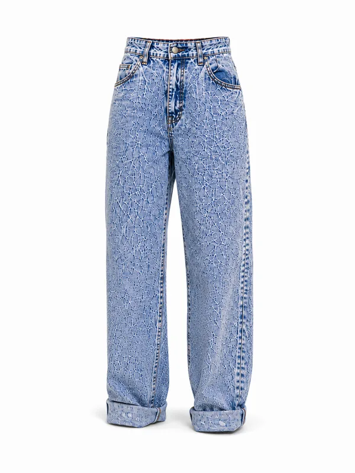
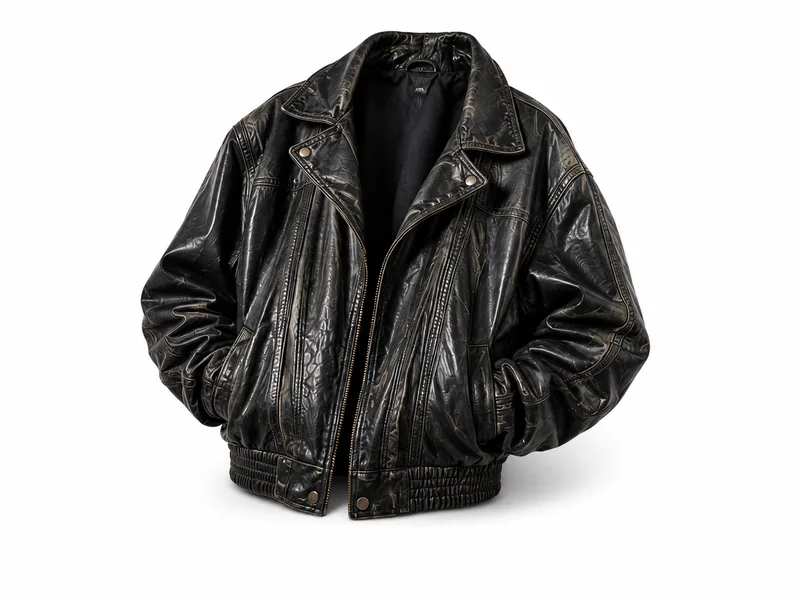
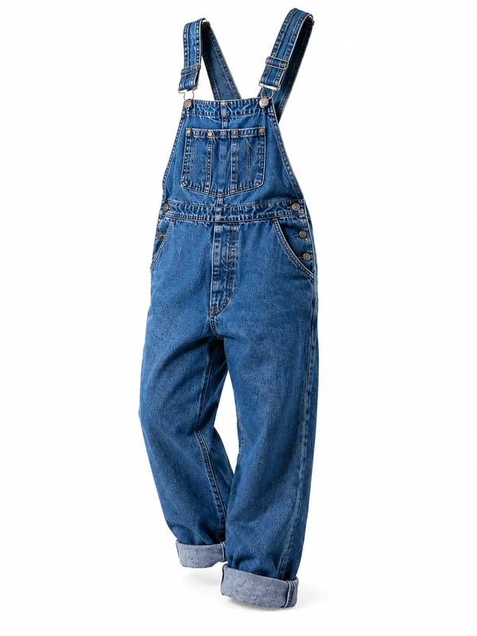
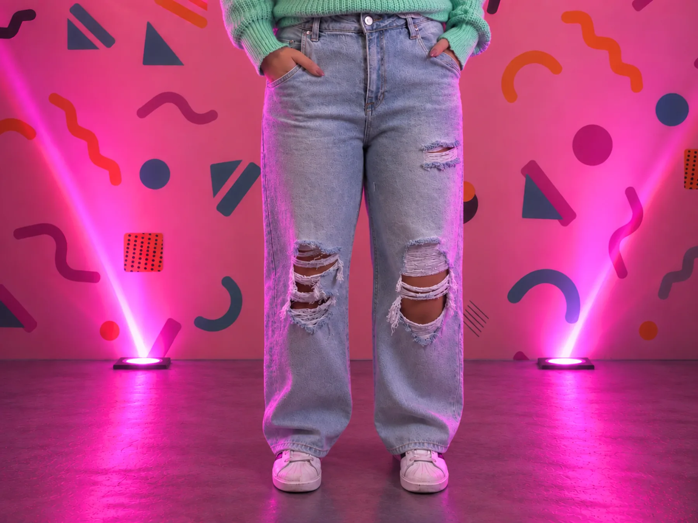
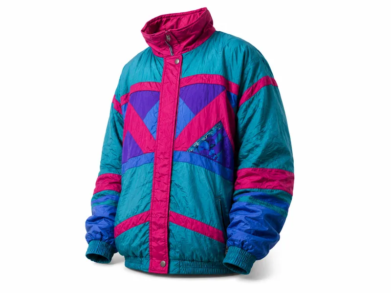
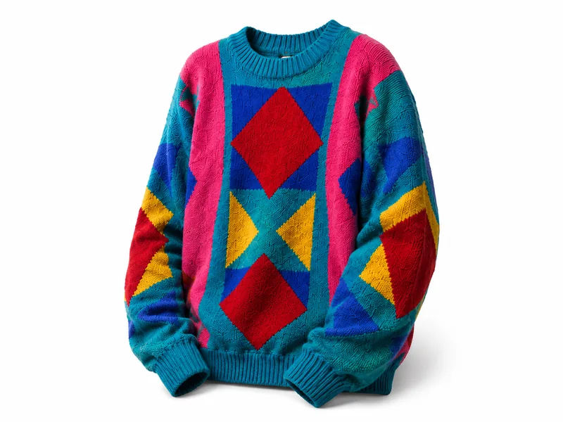
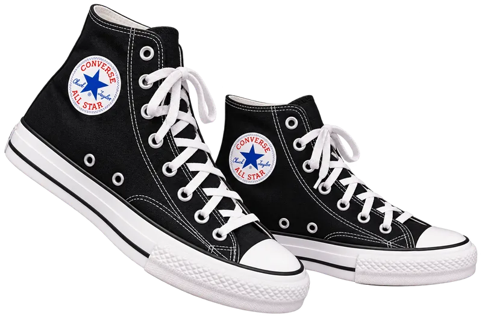

Rolazo nace con el propósito de rescatar y reinterpretar referentes de la moda de los años 80, para acercarlos a nuevas generaciones. A través de experiencias visuales, narrativas y creativas, el proyecto busca destacar la moda como un elemento de identidad, memoria y conexión cultural.
Promover el reconocimiento de la moda de los años 80 como un proceso de identidad cultural, dando a conocer su valor histórico y estético conectando dos generaciones a través de contenidos y experiencias creativas.
Descubre los lugares que marcaron una época: discotecas, bares, salones de baile y rincones que hoy sobreviven solo en la memoria bogotana. Elige una localidad y encuentra sus lugares icónicos.
Conoce la historia principal de Rolazo.
....







Una de las prendas más representativas de los años 80 que continúa siendo protagonista del estilo urbano.
Toca un disco para escuchar un fragmento
Chayanne
Menudo
Menudo
Las 6 mentes detrás de Rolazo · Toca o pasa el mouse para conocerlos